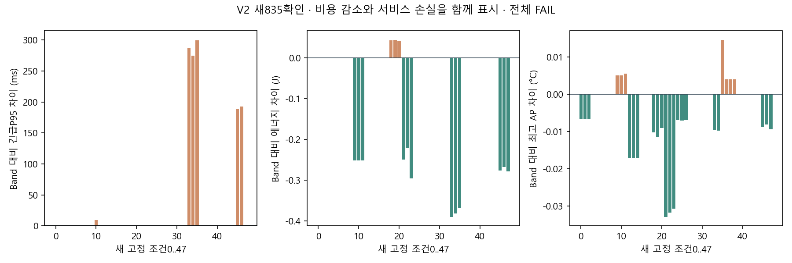

새171환경·학습0·전량 완료·실패0. 일반 기한 위반45 vs Band42/Triton39, 긴급P95도Band보다악화했다. 평균AP/J 감소를 전체 방법론 성공으로 표시하지 않는다.
| 정책 | 완료 | 일반 기한 위반 | 조건별 P95 평균ms | 평균 ΔJ | 평균 ΔAP°C |
|---|---|---|---|---|---|
| Band | 3168 | 42 | 338.107524 | 0.000000 | 0.000000 |
| Triton | 3168 | 39 | 372.576200 | 0.448761 | 0.019623 |
| CostV2 | 3168 | 45 | 364.197697 | -0.069924 | -0.004618 |
각3168/3168 완료. P95 평균은 조건별 P95의 평균, 기한 위반은 늦은 완료다. 민감도3문맥은 독립 실측3회가 아니다.
기한 내 일반 작업의 응답 시각까지 Joint 참조와 같아야 한다는 조건을 제거했다. 현재 위반/지각량·P95는 보호하고 .25초 누적 대기/물리 지원을 유지한다. 참조 순위는 P95를 전체 드레인ECT보다 먼저 보았다. 초기 표본 P95와 실제 전체 P95는 같지 않으므로 모든 guard를 최종KPI와 동일화한 것이 아니다.
확인 자료를 보고 V1 기준을 바꾸지 않았다. V1/기존RL은 보존하고 V2를 별도 사전등록하여 새835자료에서 평가했다. 공유 fallback/suffix는 V1의 유한 EDD·ECT근사이며 본정책을 재귀적으로 끝까지 실행한 rollout은 아니다.
